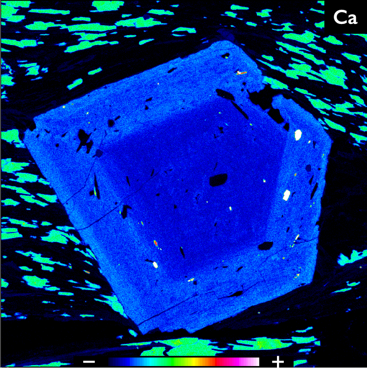

Amphibole deformation and rheology of the lower crustExperimentally derived models for the strength of continental lithosphere highlight the influence of water on the strength of the lower crust. High-temperature high-pressure deformation experiments in a Griggs apparatus on basalt with added water determined the relationship between amphibole-forming hydration reactions and shear strength. More experiments are planned to further target the rheology of amphibole. |
|
Biotite deformation and recovery mechanismsMicas like biotite are an ubiquitous mineral in faults and shear zones and are often invoked to explain the weakness of the crust. High-pressure experiments in a Deformation-DIA test the contributions of different possible deformation mechanisms, and high-temperature torsion experiments are ongoing in a Paterson apparatus to observe the deformation and recovery mechanisms active at increasing strain. |
|
Polymineralic rheology and strength of the subduction plate interfaceThe strength of the plate interface is controlled by the operating grain-scale deformation mechanisms. We are investigating an exhumed paleo subduction interface to determine the fabric-forming mineral phases and their dominant deformation mechanisms through microanalytical techniques including optical microscopy, electron backscatter diffraction (EBSD) mapping, and image analysis. |
|
Frictional healing of fault gougesFrictional healing is a fundamental process in the seismic cycle that allows faults to recover their strength between earthquakes. Experiments conducted on synthetic gouges measured the impact of clay minerals on healing rates and found that healing decreases with increasing clay content. This small healing, together with low strength and a tendency toward stable behavior, may promote small frequent earthquakes—or inhibit earthquakes—on faults.Find out more in Seyler et al. (2023) GRL. |
|
|  |
Structural and metamorphic history of the Leech River FaultThe Leech River Shear Zone (LRSZ) on Vancouver Island accommodated one of the most recent accretion events in the Canadian Cordillera. Combining field observations with geochemical data and microstructural analysis, we linked deformation fabrics to their synkinematic pressure and temperature conditions to identify the structural record of accretion along the LRSZ and determine its tectonic setting.Find out more in Seyler et al. (2022) Tectonics. |
Fracture energy of shallow megathrust earthquakesHigh velocity rotary shear experiments allow us to re-create earthquake conditions within the lab and measure the fracture energy (Wb) of fault gouges. Experiments were conducted on samples collected from the incoming sediments at the Cascadia subduction zone to determine the likelihood of updip rupture propagation and tsunami generation during the next large megathrust earthquake.Find out more in Seyler et al. (2020) EPSL. |